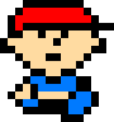
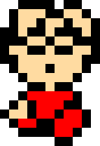
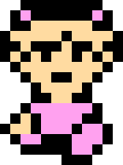
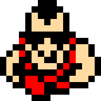

O ano, 1988; a cidade, Podunk.
Como Ninten, um jovem garoto com poderes psíquicos, você deve localizar as oito melodias para ajudar a Rainha de Magicant. Armado com seu confiável taco de baseball, você irá enfrentar hippies, zumbis...e o ocasional Caracol Mágico? Descubra o que está causando esse fenômeno tão estranho!
Mas tem robôs em todo lugar, e Ninten não consegue vencê-los sozinho. Você terá que se juntar com um grupo diverso de personagens inexperados—incluindo Lloyd, Ana e Teddy–para vencer batalhas intensas com ataques psíquicos. PK Fire! PK Thunder! PK Freeze! Parece familiar? Bem, Ninten não é o unico com poderes psíquicos — sua companheira Ana também usa ataques PSI para ajudar em batalhas.
Mas esse é só o começo de seus épicos team-ups. Na jornada de Ninten entre Magicant a a Terra, você juntará forças com o Homens Voadores também! Divirta-se explorando um zoológico abandonado, salvando o mundo e mais!
THIS IS YOU!
| NINTEN | |
|---|---|
| IDADE: | 12 anos |
| ALTURA: | 152cm |
| PESO: | 42kg |
| TIPO SANGUÍNEO: | A |
| COR DO CABELO: | Preto |
| DEFESA NO BASEBALL: | RIGHT FIELDING |

Quem sou eu?
- Ninten é um garoto energético com um espírito aventureiro, comparando-o com Indiana Jones
- Seu cachorro, Mick, é muito chegado(close) a ele, especialmente durante seus anos como bebê
- Na escola, ele foi escolhido como "Sr. Líder" pelos seus colegas de classe e é bem popular
- Ninten também rotineiramente joga baseball com uma forte paixão, sendo um "team regular"(?) no time de baseball masculino
- Mantido segredo da sua mãe, ele gosta de tocar a guitarra que seu pai deu para ele, especialmente quando acompanhado por Mick
- Sua comida favorita é Prime rib(?), que sua mãe faz para o jantar uma vez na semana
MY FAVORITE THINGS
Boné de baseball
Boné dado como presente pelo seu pai, ele só tira seu boné quando toma banho ou quando ele faz uma batida poderosa quando joga baseball ou quando ele vai dormir.
Tiquetes para o Tokyo Giants
Tiquetes trazidos pelo pai de Ninten depois de uma viagem para o Japão. Ninten acredita que esse time é "irmão" do San Francisco Giants, que é seu favorito.
Foto da bisavó
A foto descolorida de borda eliptica da sua bisavó é mantida na sua mesa e é algo que ele realmente aprecia, mas metade da foto foi rasgada
Bola de baseball assinada por Shigeo Nagashima
Ninten recebeu a bola de baseball de Nagashima quando eles estavam sentados lado a lado assistindo um jogo da "big leagues". Ninten reconheceu Nagashima de uma entrevista numa revista de baseball que ele tinha lido.
Colher dobrada
A colher dobrou quando ele brincava durante o jantar, quando ele já estva chei depois de comer na barraquinha de cachorro-quente, e como resultado foi incapaz de se conter, e dobrou a colher por meios desconhecidos.
Penguim de brinquedo
O animal favorito do Ninten são penguins, por isso seu penguim de brinquedo é uma das suas posses mais queridas. Quando penguins foram introduzidos no zoológico local, isso fez uma grande "impressão" nele, já que ele só tinha visto eles na TV.
YOUR DEAR FRIEND
| LLOYD | |
|---|---|
| IDADE: | 11 anos |
| ALTURA: | 149cm |
| PESO: | 40kg |
| TIPO SANGUÍNEO: | AB |
| COR DO CABELO: | Cinza |

Quem é ele?
- Esteriótipo de uma pessoa nerd, é tímido e inteligente
- Frequentemente sofre bullying de vários de seus colegas, como resultado ele é geralmente encontrado se escondendo em latas de lixo enquanto está na escola.
- Quando era mais novo, ele já mostrava comportamento introvertido, não deixando outros além de sua mãe mostrar afeição por ele.
- Lloyd já gostava do seu ídolo, Albert Einstein, desde cedo
- Ele gosta muito de ciência, principalmente mecânica, já que ele é capaz de ativar foguetes industriais e navegar tanques militares.
HIS FAVORITE THINGS
Livro sobre teoria da relatividade
Lloyd encontrou o livro na estante de seu pai aos três anos e isso acendeu seu interesse por Albert Einstein durante os próximos anos.
Software para PC
Ele usa seu PC principalmente para jogar videogames e às vezes ele pode mostrar comportamento agressivo ao perder um jogo ou quando o jogo mal-funciona.
Boneco do Superman
Um dos poucos itens que não são relacionados a ciência, é indicado que ele consegue se identificar no personagem, já que ele tem dois lados: uma pessoa comum e um herói.
Kit de ferramentas de brinquedo
As ferramentas servem mais como um memento(?) do que para construir dispositivos, visto que esse é o primeiro kit que ele recebeu, que foi comprado pela mãe dele.
Trófeu da "Pan-American Concentration Convention: Boy's Division Championship"
Ele ganhou o troféu na convenção depois de demonstrar uma capacidade de memória impressionante, apesar de que apenas a base sobrou do troféu, as he pois ele usou todo o cobre do troféu em vários experimentos.
Óculos
Ele raramente os tira, só quando está sozinho.
YOUR FRIEND OF MIND
| ANNA | |
|---|---|
| IDADE: | 12 anos |
| ALTURA: | 143cm |
| PESO: | 36kg |
| TIPO SANGUÍNEO: | B |
| COR DO CABELO: | Loiro |

Quem é ela?
- Indivíduo gentil e simpático, até o ponto onde ele é considerada o orgulho de Snowman pelos moradores da cidade.
- Nascida no dia 23 de Dezembro, ela tem, portanto, Capricôrnio como seu signo do zodiáco
- Gosta de tocar piano e orgão, pratica regularmente músicas de Mozart, as quais ela acha relaxante
- Els é frequentemente chamada de "Little Mother" pelas crianças mais novas da cidade, devido a sua personalidade e suas notas altas na escola.
HER FAVORITE THINGS
Piano
Ela é habilidosa tocando piano e considera a melodia como outra forma de escrita. Durante uma ocasião, quando o professor dela tinha passado tarefa de casa, Ana pergontou ao professor se ela poderia fazer a tarefa no piano, deixando o professor confuso.
Bíblia
Ela recebeu a Bíblia ainda bebê, e ainda que ela não entendesse as palavras escritas, ela podia sentir a pureza que elas continham. O livro se tornou ainda mais valioso para ela quando ela aprendeu que havia uma dedicatória que dizia:"Para nossa pequena Ana", na última página.
Fita(Ribbon)
Sua fita é alqo com que ela normalmente prende o cabelo, apesar de ela usar ocasionalmente um chápeu durante excursões especiais.
Coleção de selos
A coleção de selos consiste de selos usados dados a ela pelos seus colegas de classe na sunday school, os quais ela guarda em uma lata circular de doce e isso ajuda ela no seu trabalhovoluntário(volunteering)
Coleção de envelopes
A coleção de envelopes é entretanto algo que ela tem para ela mesma; ela manda mandar cartas, e devido a sua meticulosidade (finickity) acerca da escolha de envelope, o tempo gasto escrevendo a carta é quase menor do que o tempo gasto escolhendo um envelope.
Cópia LP do album de 1981 "Tadaima" de Akiko Yano
Essa cópia de Tadaima foi dado como presente para ela do sua amiga por correspondência, Yoshie, que mora no Japão. Ele geralmente escuta o álbum ao chegar em casa da escola, mesmo que ela não entenda japonês.
YOUR BIG FRIEND
| TEDDY | |
|---|---|
| IDADE: | (?) |
| ALTURA: | 188cm |
| PESO: | 78kg |
| TIPO SANGUÍNEO: | (?) |
| COR DO CABELO: | Preto |

Quem é Teddy?
- Ele demonstra comportamento violento, já aos cinco anos ele gostava de lutar, e frequentemente fuma
- Dizem que ele era mais tranquilo antes da morte dos pais
- Ele gosta de cantar, tocar violão e ecutar shows de light rockabilly na Live House
TEDDY'S FAVORITE THINGS
Violão
Às vezes ele toca seu violão enquanto no quarto, onde ele quietamente cantarola(hums) uma balada(?)(ballad) junto a música do violão
Cigarros
Desde criança seu comportamento era semelhante ao de um adulto, e ele frequentemente carregava um pacote de cigarros de chocolate.
Óculos de sol
Acredita-se que ele conseguiu esses óculos quando estava em uma loja procurando por um par, quando ele descobriu que a loja não vendia óculos de sol, ele socou os dentes da frente do dono para fora, que por obrigação pegou um par e o chamou de "Teddy Glass", depois o dono vendeu para ele.
Jaqueta de couro
Ele prefere não vestir a jaqueta de couro, dizem que seja por que ele não gosta de passar tempo com os membros da sua gangue; a jaqueta, entretanto, serve como uma memória de seu pai, depois que ele faleceu
Livro sobre E. Yazawa
A autobiografia por Eikichi Yazawa, um músico japonês, foi enviada a ele por um membro da sua gangue, Koyano. Ainda que ele não entenda Japonês, ele consegue sentir a mensagem escrita.
Pet Iguana
Ele recebeu o pet iguana de um dos criminoso grupo rival, a gangue dos Jet Lizard, depois de uma luta onda a gangue Bla-Bla ganhou. Os Jet Lizard juraram aliança a Teddy depois do incidente, e lhe deram a iguana como prova; apesar de não gostar do animal, Teddy acabou criando e tomando conta da iguana.